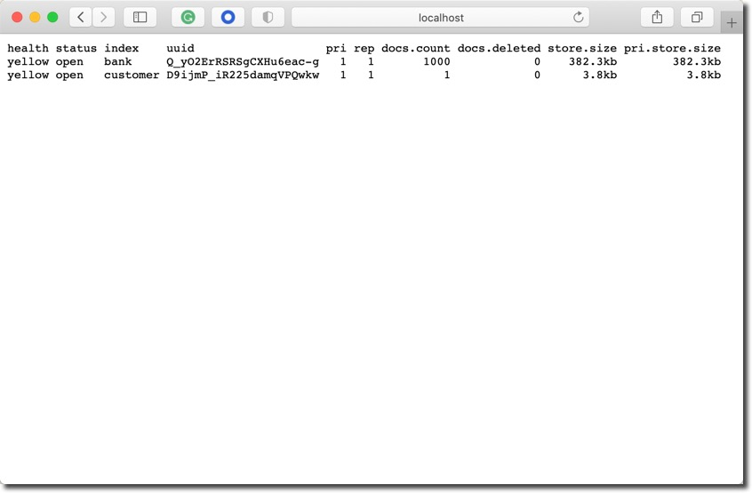
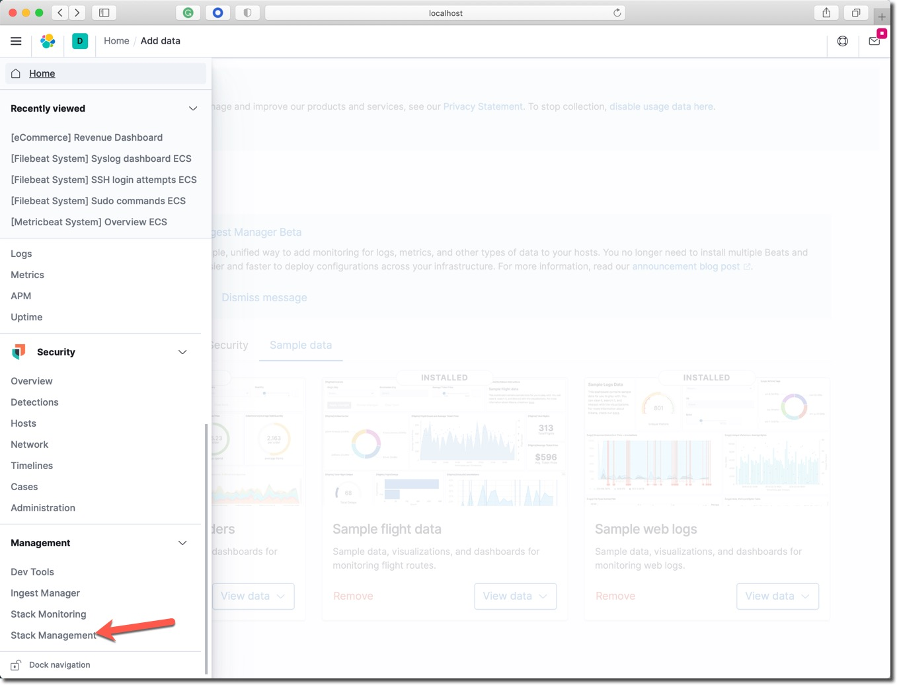
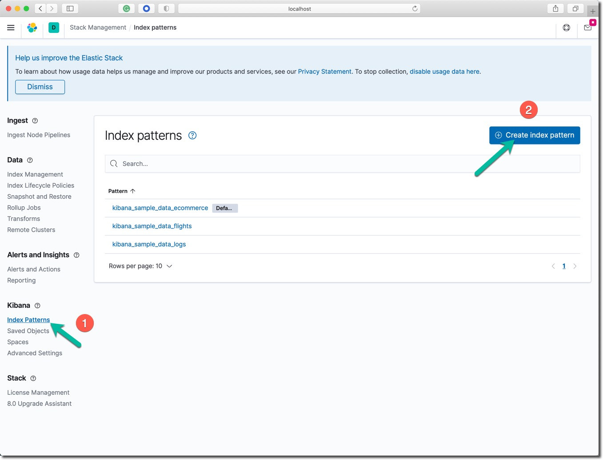
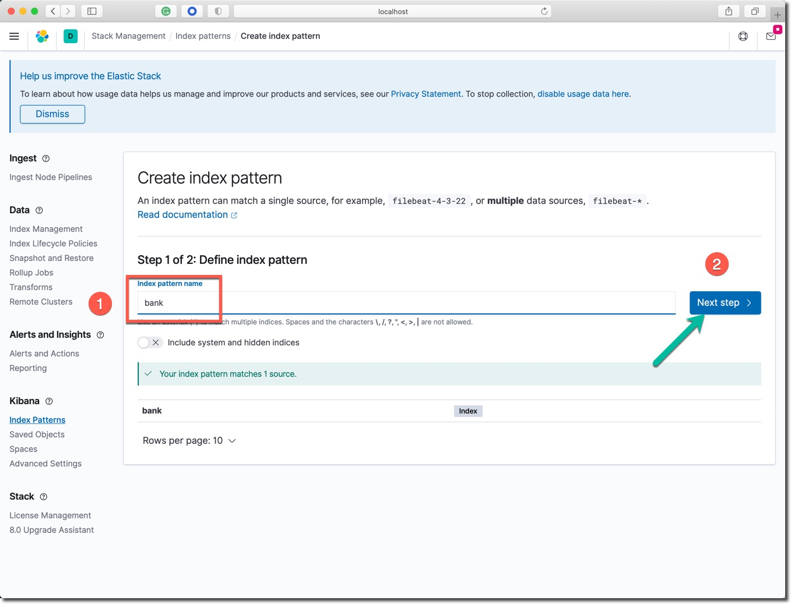
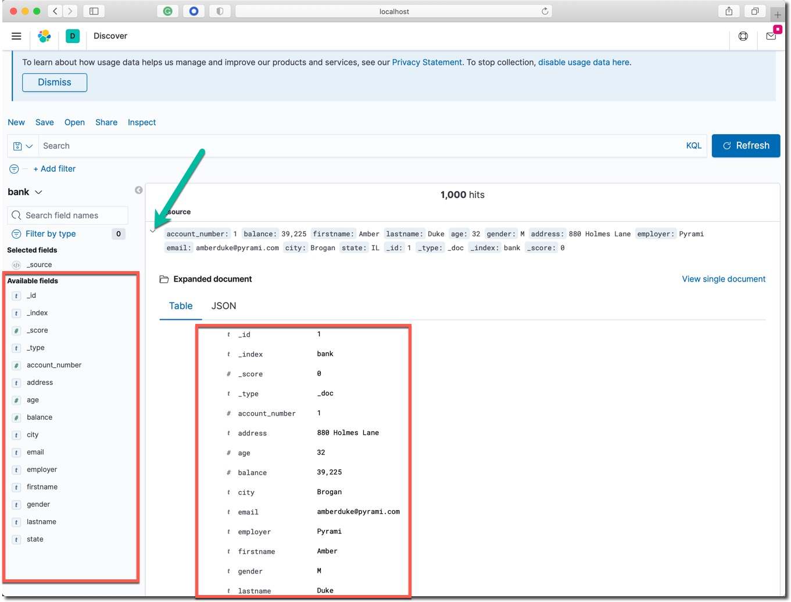

学习收益
你将学习到以下技能：
- 下载并运行 Elasticsearch 服务器
- 在服务器中索引一些文档（使用 _index API）
- 体验搜索查询 （使用 _search API）
- 尝试数据分析聚合 （使用 _search API）
- 下载并运行 Kibana 服务器
本课程的所有程序文件、软件包的下载地址如下：
- 百度网盘 https://pan.baidu.com/s/1fqLLEanfkmLYBZJBrKhiYQ
- 提取码：0kx6
请在网盘文件加中，找到对应课程的目录【名为：workshop只需要下载本文件夹】，下载该目录中的两个文件到本机（macOS），或者上传到云主机中。
已经下载并且准备好的情况下，忽略本课程中提到的任何下载命令。
参考信息
Elastic 官方参考文档：
- Getting started with Elasticsearch
- Discovery and cluster formation settings
- Bootstrap Checks
- Search your data
- Aggregations
Elastic Stack 包含了我们常说的 ELK 或者 ELKB。如下图所示： 
ELK 是 Elasticsearch、Logstash和Kinina的首字母缩写，ELK Stack是elastic公司三大核心产品的组合方案。

顺利完成本 Lab 的笔记本电脑的软硬件需求如下。
笔记本电脑硬件配置
- 8GB 内存或更多
- i5 及更高 CPU
- Wifi 或有线网络，能访问互联网。
软件配置
- MacOS、Windows 或者 Linux 操作系统都可以。
- 终端命令行工具软件，例如： iTerm2、Terminal、 cmder for Windows 10。
- curl、wget 或者其他的图形化下载工具。
- 虚拟机运行软件 Virutalbox 或者 VMWare Workstation。
- 创建一个 Linux 虚拟机，内存不小于 4GB，确保虚拟机关闭防火墙软件，所有端口都可以和本机正常通讯。
下载软件压缩包
下载符合你的操作系统类型的 Elasticsearch 软件包。
Linux: elasticsearch-7.9.3-linux-x86_64.tar.gz
curl -L -O https://artifacts.elastic.co/downloads/elasticsearch/elasticsearch-7.9.3-linux-x86_64.tar.gz
macOS: elasticsearch-7.9.3-darwin-x86_64.tar.gz
curl -L -O https://artifacts.elastic.co/downloads/elasticsearch/elasticsearch-7.9.3-darwin-x86_64.tar.gz
Windows:
解压缩软件压缩包
进入下载软件包所在的目录中。解压缩 Elasticsearch 服务器端软件包。
Linux:
tar -xvf elasticsearch-7.9.3-linux-x86_64.tar.gz
macOS:
tar -xvf elasticsearch-7.9.3-darwin-x86_64.tar.gz
Windows PowerShell:
Expand-Archive elasticsearch-7.9.3-windows-x86_64.zip
启动 Elasticsearch 服务
进入加压缩后的目录，并在命令行启动 Elasticsearch 服务器。
Linux 和 macOS:
cd elasticsearch-7.9.3/bin
./elasticsearch -Ecluster.name=1m-only -Ediscovery.type=single-node -Enode.name=node1 -Enetwork.host=0.0.0.0
Windows:
cd elasticsearch-7.9.3\bin
.\elasticsearch.bat -E cluster.name=1m-only -E discovery.type=single-node -E node.name=node1
在启动日志停止滚动后，一个名为 1m-only 的单节点 Elasticsearch 集群就启动成功了。启动是参数说明如下：
- cluster.name ： 集群名称
- node.name : 节点名称
- discovery.type ：集群中节点间的发现方式，显式声明该集群中只有一个节点。
在一个新的命令行窗口中用 curl 命令行工具测试 Elasticsearch 集群服务的状态。
查看服务的基本信息。Linux (SSH 登陆之后)和 macOS:
curl -X GET http://localhost:9200
curl -X GET http://localhost:9200
{
"name" : "node1",
"cluster_name" : "1m-only",
"cluster_uuid" : "LvHOXakFTby0-uPwq_Ekiw",
"version" : {
"number" : "7.9.3",
"build_flavor" : "default",
"build_type" : "tar",
"build_hash" : "c4138e51121ef06a6404866cddc601906fe5c868",
"build_date" : "2020-10-16T10:36:16.141335Z",
"build_snapshot" : false,
"lucene_version" : "8.6.2",
"minimum_wire_compatibility_version" : "6.8.0",
"minimum_index_compatibility_version" : "6.0.0-beta1"
},
"tagline" : "You Know, for Search"
}
查看集群的状态信息。Linux (SSH 登陆之后) 和 macOS:
curl -X GET http://localhost:9200/_cat/nodes\?v
curl -X GET http://localhost:9200/_cat/nodes\?v
ip heap.percent ram.percent cpu load_1m load_5m load_15m node.role master name
127.0.0.1 17 97 7 2.05 dilmrt * node1
上面的 master 那一列下面的值为 * 号，表明节点 node1 是主节点。
在浏览器中验证 Elasticsearch 集群服务的状态，打开浏览器中访问这个网址 http://localhost:9200 。或者访问本地虚拟机的 IP 地址，例如：http://192.168.50.11:9200 ，访问结果应如下图所示：

然后尝试访问这个网址 http://localhost:9200/_cat/nodes\?v 。
索引单个和返回单个文档
索引一个文档，该文档只具有一个键值对数据 "name": "John Doe" 。
curl -X PUT "localhost:9200/customer/_doc/1?pretty" -H 'Content-Type: application/json' -d'
{
"name": "John Doe"
}
'
注意：以上命令最后一行还有一个单引号。
以上命令的返回结果如下：
{
"_index" : "customer",
"_type" : "_doc",
"_id" : "1",
"_version" : 1,
"result" : "created",
"_shards" : {
"total" : 2,
"successful" : 1,
"failed" : 0
},
"_seq_no" : 0,
"_primary_term" : 1
}
以上的命令创建了名称为 customer 的新索引，并保存了第一个编号为 1 的文档。
用下面的命令取回这个编号为 1 的文档。
curl -X GET "localhost:9200/customer/_doc/1?pretty"
返回的结果如下：
{
"_index" : "customer",
"_type" : "_doc",
"_id" : "1",
"_version" : 1,
"_seq_no" : 0,
"_primary_term" : 1,
"found" : true,
"_source" : {
"name" : "John Doe"
}
}
批量索引文档
在有大量文档的时候，可以使用 buck API 进行批量索引（导入）的操作。
确认软件包目录下有一个名为 account.json 的文件。否则根据下面的提示下载该文件。
下载测试数据文件 accounts.json ，这个文件中有一千条人工生成的数据
将 account.json 文件下载到测试目录中，用文本编辑器打开浏览确认，或者在 Linux 系统中执行命令 cat account.json。这个文件中有一千条数据记录。
在命令行中，进入以上测试数据文件的目录中，运行下面的两条命令。
curl -H "Content-Type: application/json" -XPOST "localhost:9200/bank/_bulk?pretty&refresh" --data-binary "@accounts.json"
curl "localhost:9200/_cat/indices?v"
以上命令的结果，最后三行应该如下所示：
health status index uuid pri rep docs.count docs.deleted store.size pri.store.size
yellow open bank Q_yO2ErRSRSgCXHu6eac-g 1 1 1000 0 382.2kb 382.2kb
yellow open customer D9ijmP_iR225damqVPQwkw 1 1 1 0 3.8kb 3.8kb
上面的结果表明：当前的集群中已经创建了两个索引 bank 和 customer ; 名为 bank 的索引显示文档数为 1000，这就是刚才用 bulk API 导入的数据。
如果在浏览器中访问这个网址 localhost:9200/_cat/indices?v 也可以看到如下相同结果。

搜索 1
说明：
- 目标 bank 索引
- 搜索所有文档
- 结果按 account_number 字段升序排列
在命令行执行下面的命令。
curl -X GET "localhost:9200/bank/_search?pretty" -H 'Content-Type: application/json' -d'
{
"query": { "match_all": {} },
"sort": [
{ "account_number": "asc" }
]
}
'
执行结果解释：
- took – Elasticsearch 执行本次查询使用了多少毫秒
- timed_out – 是否查询超时
- _shards – 有多少个数据分片参与了本次搜索，按成功、略过和失败计数
- max_score – 找到的最相关文档的相关度分数
- hits.total.value - 找到了多少个相关文档
- hits.sort - 文档排序字段位置(在没有设置的时候用相关度分数排序)
- hits._score 文档的相关度分数（在 match_all 时不适用）
以上命令返回了搜索结果的整体概述信息和第一页（前 10 条文档）的搜索结果。
搜索 2
说明：
- 目标 bank 索引
- 搜索所有文档
- 从返回结果中取出第 10 到 19 个文档。
- from 结果的起始位置
- size 返回的数据条数
在命令行执行下面的命令。
curl -X GET "localhost:9200/bank/_search?pretty" -H 'Content-Type: application/json' -d'
{
"query": { "match_all": {} },
"sort": [
{ "account_number": "asc" }
],
"from": 10,
"size": 10
}
'
执行结果解释：
- 在 1000 个文档中成功的搜索到 10 个文档
- 返回结果中 _id 从 10 滚动到 19
- 工返回 10 个文档
搜索 3
说明：
- 目标 bank 索引
- 搜索所有地址中还有
mill和lane关键词的文档
在命令行执行下面的命令。
curl -X GET "localhost:9200/bank/_search?pretty" -H 'Content-Type: application/json' -d'
{
"query": { "match": { "address": "mill lane" } }
}
'
执行结果解释：
- 在 1000 个文档中成功的搜索到 19 个文档
- 返回结果中观察
address这个字段的返回值 - 默认只显示前 10 条数据
- 文档相关性最高分是 9.507477
- 相关性最高的文档，address 字段中同时包含了
mill和lane两个关键词。
搜索 4
说明：
- 目标 bank 索引
- 搜索所有年龄为 40 且不居住在 ‘ID' 州的账号。
在命令行执行下面的命令。
curl -X GET "localhost:9200/bank/_search?pretty" -H 'Content-Type: application/json' -d'
{
"query": {
"bool": {
"must": [
{ "match": { "age": "40" } }
],
"must_not": [
{ "match": { "state": "ID" } }
]
}
}
}
'
执行结果解释：
- 在 1000 个文档中成功的搜索到 43 个文档
- 返回结果中观察
age这个字段的都是40 - 返回结果中观察
state这个字段的值都不是ID
搜索 5
说明：
- 目标 bank 索引
- 搜索所有账号
- 返回账户余额金额
balance在 20000 到 30000 之间的数据
在命令行执行下面的命令。
curl -X GET "localhost:9200/bank/_search?pretty" -H 'Content-Type: application/json' -d'
{
"query": {
"bool": {
"must": { "match_all": {} },
"filter": {
"range": {
"balance": {
"gte": 20000,
"lte": 30000
}
}
}
}
}
}
'
执行结果解释：
- 在 1000 个文档中成功的搜索到 217 个文档
- 在返回结果中观察
balance的数值是否满足搜索条件
聚合运算 1
说明：
- 不是设置任何搜索条件，在所有文档中做聚合运算
- 不返回任何文档 size = 0
- 用 state 作为关键字分组查询结果
在命令行执行下面的命令。
curl -X GET "localhost:9200/bank/_search?pretty" -H 'Content-Type: application/json' -d'
{
"size": 0,
"aggs": {
"group_by_state": {
"terms": {
"field": "state.keyword"
}
}
}
}
'
执行结果解释：
- hits 总共搜索了 1000 个文档
- 在 aggregations 查看每个州的银行账户总个数
聚合运算 2
说明：
- 不是设置任何搜索条件，在所有文档中做聚合运算
- 不返回任何文档 size = 0
- 用 state 作为关键字分组查询结果
- 计算每个州银行账户里的余额的平均值
- 默认以每个州的账户数量排序结果
在命令行执行下面的命令。
curl -X GET "localhost:9200/bank/_search?pretty" -H 'Content-Type: application/json' -d'
{
"size": 0,
"aggs": {
"group_by_state": {
"terms": {
"field": "state.keyword"
},
"aggs": {
"average_balance": {
"avg": {
"field": "balance"
}
}
}
}
}
}
'
执行结果解释：
- 结果同上一个聚合
- 另外增加了每个州的所有银行账户的余额求平均值运算
聚合运算 3
说明：
- 其它功能同上
- 用每个州的平均账户余额从大到小排序结果
在命令行执行下面的命令。
curl -X GET "localhost:9200/bank/_search?pretty" -H 'Content-Type: application/json' -d'
{
"size": 0,
"aggs": {
"group_by_state": {
"terms": {
"field": "state.keyword",
"order": {
"average_balance": "desc"
}
},
"aggs": {
"average_balance": {
"avg": {
"field": "balance"
}
}
}
}
}
}
'
执行结果解释：
- 观察 bucket 里的聚合结果
- 按每个州的所有银行账户的平均值倒排序
下载后运行 Kibana
已经在本机下载好所有软件包文件的，请忽略 curl 下载命令，直接执行解压缩和。
在 Linux 上运行下面的命令。
curl -O https://artifacts.elastic.co/downloads/kibana/kibana-7.9.3-linux-x86_64.tar.gz
curl https://artifacts.elastic.co/downloads/kibana/kibana-7.9.3-linux-x86_64.tar.gz.sha512 | shasum -a 512 -c -
tar -xzf kibana-7.9.3-linux-x86_64.tar.gz
cd kibana-7.9.3-linux-x86_64/
bin/kibana --server.host=0.0.0.0
或者 macOS 上运行下面的命令。
curl -O https://artifacts.elastic.co/downloads/kibana/kibana-7.9.3-darwin-x86_64.tar.gz
curl https://artifacts.elastic.co/downloads/kibana/kibana-7.9.3-darwin-x86_64.tar.gz.sha512 | shasum -a 512 -c -
tar -xzf kibana-7.9.3-darwin-x86_64.tar.gz
cd kibana-7.9.3-darwin-x86_64/
或者 Windows 上操作如下。
下载 zip 压缩包。
解压后进入 Kibana 运行目录，从命令行启动 Kibana 服务器。
CD c:\kibana-7.9.3-windows-x86_64
.\bin\kibana.bat
登录 Kibana 控制台导入&查看示例数据
到目前为止，Elasticsearch 集群运行在无密码的开发模式，因此无需输入用户名和密码。
打开浏览器访问网址 localhost:5601 或者虚拟机的 IP 地址，例如 192.168.50.11:5601
在进入 Kibana 图形界面后，点击 Load a data set and a Kibana dashboard 链接。

分别点击这三个按钮，导入三组示例数据。

点击 Dashboard 查看数据分析仪表板。
创建 bank 索引模式&查看数据
为了在图形界面中创建用于分析 bank 索引中所有数据的"索引模式"。

点击左上角的按钮打开左侧菜单，点击 Stack Management 菜单。

在 Kibana 管理选项中，点击创建索引模式按钮。

在索引模式名称中输入 bank ， 点击先一步直到创建完成。

点击左上角的按钮，打开左侧菜单栏，点击 Kibana 部分的 Discover 链接。

点击左侧的向下三角图标，打开索引选择菜单，选中刚才创建的 bank 索引模式。

参考左侧的可用字段，这是 bank 索引的所有字段。点击第一条数据的向下按钮，查看该文档。